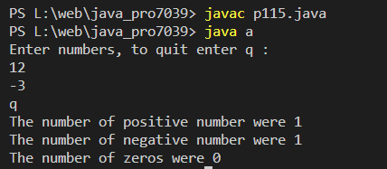

Write a Java program to enter the numbers till the user wants and at the end the program should display the largest and smallest numbers entered
Code:-
class a
{
public static void main(String arg[])throws java.io.IOException
{
java.io.BufferedReader input = new java.io.BufferedReader(new java.io.InputStreamReader(System.in));
int positive=0;
int negative=0;
int zeros=0;
Double num;
String a="";
System.out.println("Enter numbers, to quit enter q : ");
while(true)
{ try
{
a=input.readLine();
num= Double.parseDouble(a);
}
catch(java.lang.NumberFormatException e)
{
if(a.equals("q"))
break;
else continue;
}
if(num<0)
negative ++;
else if (num>0)
positive++;
else
zeros++;
}
System.out.println("The number of positive number were "+positive);
System.out.println("The number of negative number were "+negative);
System.out.println("The number of zeros were "+zeros);
}
}
Output:-
